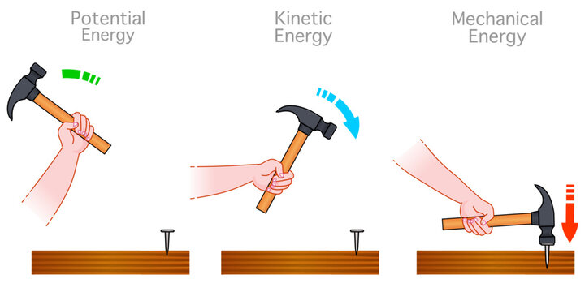

Energy Transformations
Energy transformations refer to the process by which energy changes from one form to another. In nature and in human-made systems, energy is constantly being converted from one form to another. For example, when a person throws a ball, the chemical energy stored in their muscles is transformed into kinetic energy as the ball moves through the air. Similarly, when a toaster is turned on, electrical energy is transformed into thermal energy to toast bread. Understanding energy transformations is crucial in physics as it allows us to analyze and predict the behavior of various systems, from simple mechanical processes to complex natural phenomena. These transformations follow the law of conservation of energy, which states that energy cannot be created or destroyed, only transformed from one form to another.
1. Kinetic Energy (KE)
Kinetic energy is the energy an object has because it's in motion. The faster and heavier an object moves, the more kinetic energy it possesses.
Formula:
KE = 1/2 m v2
Where:
KE = Kinetic energy
m = Mass of the object
v = Velocity of the object
2. Potential Energy (PE)
Potential energy is energy stored within an object due to its position or condition, such as gravitational or elastic potential energy. The greater the height or compression/stretch, the more potential energy it possesses.
Gravitational Potential Energy:
Formula:
PEgravity = mgh
Where:
PEgravity = Gravitational potential energy
m = Mass of the object
g = Acceleration due to gravity (Usually 9.8 m/s2)
h = Height above a reference point
Elastic Potential Energy:
Formula:
PEelastic = 1⁄2 kx2
Where:
PEelastic = Elastic Potential Energy
k = Spring constant
x = Displacement from the equilibrium position

3. Mechanical Energy (ME):
Mechanical energy combines an object's kinetic and potential energies. It reflects both its motion and position, with the total energy staying constant unless external forces act upon it.
Formula: ME = KE + PE
4. Work (W):
Work is done when a force acts upon an object to cause it to move a certain distance in the direction of the force. It's measured as the product of the force applied and the distance moved in the direction of the force.
Formula:
W = F ⋅ d ⋅ cos(θ)
Where:
W = Work done
F = Force applied
d = Displacement
θ = Angle between the force and displacement vectors
5. Power (P):
Power is the rate at which work is done or energy is transferred, measured in watts (W). It's calculated by dividing the work done by the time taken to do the work, indicating how quickly energy is being converted or transferred.
Formula:
P = W / t
Where:
P = Power
W = Work done
t = Time taken